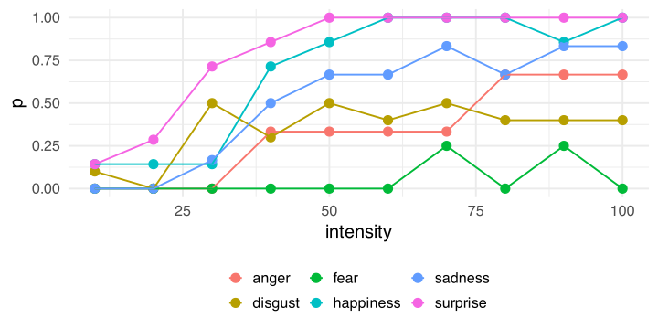
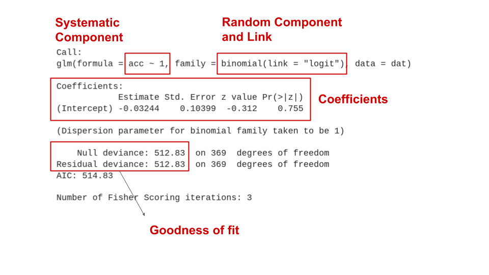
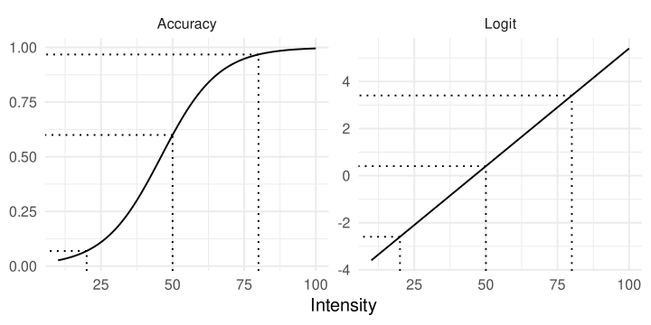
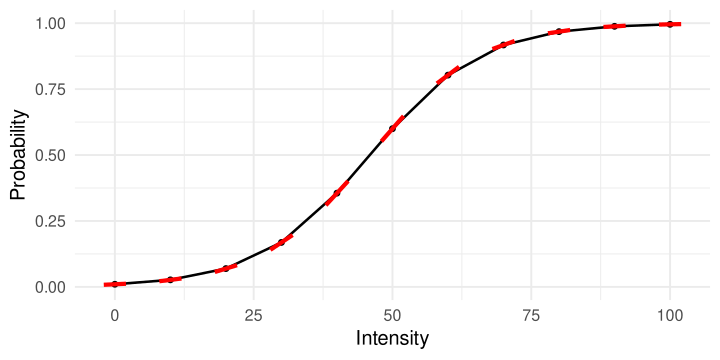
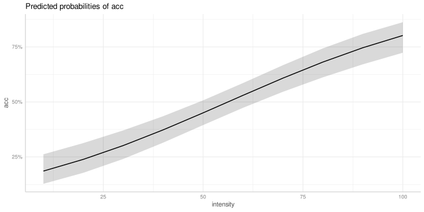
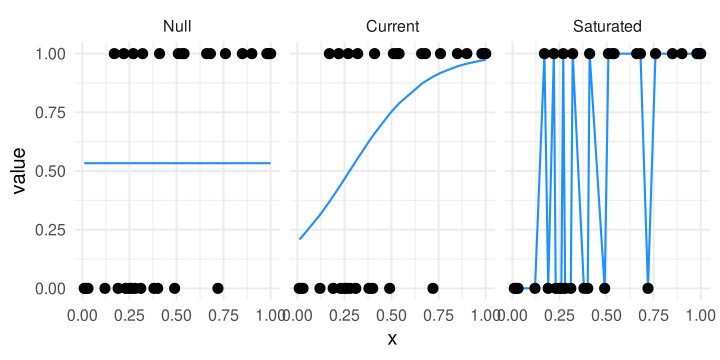
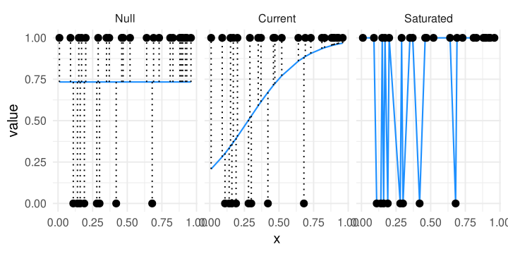
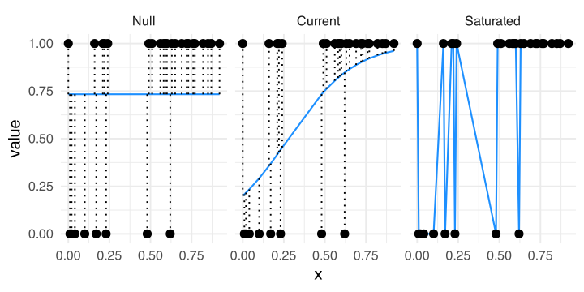
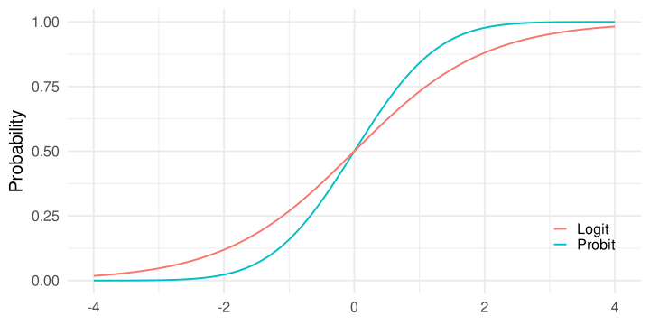
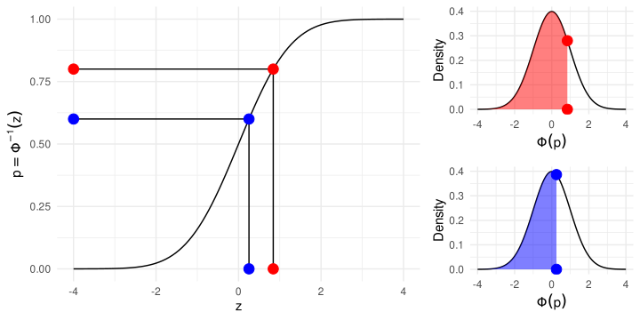

We did some pre-processing for the purpose of this example. The original dataset can be found at osf.io/zhtbj/.
You can download the dataset for this example at this link. It is a rds file, and you can open it using:
dat <-readRDS("shimizu.rds")
Then we can load some packages:
library(lme4) # for mixed-modelslibrary(tidyverse) # for data manipulationlibrary(ggplot2) # plotting
Exploring
For the purpose if this workshop, we will focus on a single subject (otherwise we should use a mixed-effects model). We also select only the relevant columns.
dat <-subset(dat, id ==22)dat <- dat[, c("id", "age", "intensity", "emotion_lbl", "response_lbl", "acc")]dat
The intensity is the intensity (from 10% to 100%) of the facial expression. emotion_lbl is the emotion and response_lbl is the response.
When emotion_lbl = response_lbl the acc = 1 namely a correct response.
Exploring
We can calculate the average accuracy for each emotion. Clearly there is a big difference with fear being the hardest one and surprise the easiest. We remove neutral because we have no associated intensity
dat |>group_by(emotion_lbl) |>summarise(p =mean(acc),n =n()) |>arrange(desc(p))
# A tibble: 7 × 3
emotion_lbl p n
<chr> <dbl> <int>
1 neutral 1 7
2 surprise 0.8 70
3 happiness 0.686 70
4 sadness 0.517 60
5 disgust 0.35 100
6 anger 0.333 30
7 fear 0.05 40
dat <-filter(dat, emotion_lbl !="neutral")
Exploring
Also for intensity, there is a clear increasing pattern. In this specific subject, the highest intensities are not clearly distinguished (maybe a non-linear pattern).
dat |>group_by(intensity) |>summarise(p =mean(acc),n =n()) |>arrange(desc(p))
We have few trials but we can also explore the interaction between emotion and intensity. There are some emotions where the rate of increase in accuracy as a function of the emotion is faster compared to others.
dat |>group_by(intensity, emotion_lbl) |>summarise(p =mean(acc)) |>ggplot(aes(x = intensity, y = p, color = emotion_lbl)) +geom_point(size =4) +geom_line()
Exploring, plots

Exploring, odds and odds ratios
We can start exploring the effects calculating odds and odds ratios.
odds <-function(p) p / (1- p)or <-function(pn, pd) odds(pn) /odds(pd)
When the odds are lower than 1, the probability of success is lower than the probability of failure. When the odds are greater than 1 the probability of success is higher.
Exploring, odds and odds ratios
We can also calculate all the possible comparisons. Note that depending on the numerator/denominator the odds ratio is different, but we can simply take the inverse to switch numerator and numerator. Interpreting odds ratio > 1 is usually more intuitive.
For example, happiness / sadness ~ 2.04 means that the odds (not the probability) of a correct response is 2 times higher for happy faces compared to sad faces.
Model
The glm function
In R we can fit a GLM with the glm function. The syntax is the same as the lm (for standard linear models). We only need to specify the random component and the link function.
glm(y ~ x1 + x2 + x3 * x4, # systematic component (linear predictor)data = data,family =binomial(link ="logit")) # random component and link function
Clearly, the y in this example need to be consistent with the chosen family. In this case the model is expecting a 0-1 vector. If we provide labels (characters) or number > 1 or < 0 the function will fail.
Note
A glm with family = gaussian(link = "identity") is the same as running a lm. Internally glm calls lm in this case.
The null model
We can start with the easiest model that is a model without the systematic component (with no predictors).
fit0 <-glm(acc ~1, data = dat, family =binomial(link ="logit"))summary(fit0)
Call:
glm(formula = acc ~ 1, family = binomial(link = "logit"), data = dat)
Coefficients:
Estimate Std. Error z value Pr(>|z|)
(Intercept) -0.03244 0.10399 -0.312 0.755
(Dispersion parameter for binomial family taken to be 1)
Null deviance: 512.83 on 369 degrees of freedom
Residual deviance: 512.83 on 369 degrees of freedom
AIC: 514.83
Number of Fisher Scoring iterations: 3
The null model

The null model, formally
\[
\eta_i = \beta_0
\]
\[
p_i = g^{-1}(\eta_i) = g^{-1}(\beta_0)
\]
\(g^{-1}(\cdot)\) is the inverse-logit link:
\[
p_i = \frac{e^{\beta_0}}{1 + e^{\beta_0}}
\]
In other terms, the probability can be calculated inverting the logit link function evaluated on the linear predictor \(\eta\). In this case \(\eta\) only contains \(\beta_0\).
The null model, interpretation
In this case, the intercept is -0.032. The intercept is the expected value (i.e., the mean) of y (accuracy here) when everything is zero. In this case \(\beta_0\) is just the (logit transformed) overall accuracy.
b0 <-coef(fit0)["(Intercept)"]exp(b0) / (1+exp(b0)) # inverse logit## (Intercept) ## 0.4918919plogis(b0) # directly with the dedicated function## (Intercept) ## 0.4918919mean(dat$acc) # average accuracy## [1] 0.4918919log(odds(mean(dat$acc))) # probability to logit## [1] -0.03243528qlogis(mean(dat$acc)) # probability to logit with the dedicated function## [1] -0.03243528
Categorical predictor, emotion
Then we can include emotion_lbl as predictor. Let’s see what happens:
fit_em <-glm(acc ~ emotion_lbl, data = dat, family =binomial(link ="logit"))summary(fit_em)
Call:
glm(formula = acc ~ emotion_lbl, family = binomial(link = "logit"),
data = dat)
Coefficients:
Estimate Std. Error z value Pr(>|z|)
(Intercept) -0.69315 0.38730 -1.790 0.07350 .
emotion_lbldisgust 0.07411 0.44040 0.168 0.86637
emotion_lblfear -2.25129 0.82235 -2.738 0.00619 **
emotion_lblhappiness 1.47331 0.46507 3.168 0.00154 **
emotion_lblsadness 0.75984 0.46555 1.632 0.10266
emotion_lblsurprise 2.07944 0.48917 4.251 2.13e-05 ***
---
Signif. codes: 0 '***' 0.001 '**' 0.01 '*' 0.05 '.' 0.1 ' ' 1
(Dispersion parameter for binomial family taken to be 1)
Null deviance: 512.83 on 369 degrees of freedom
Residual deviance: 423.88 on 364 degrees of freedom
AIC: 435.88
Number of Fisher Scoring iterations: 5
Categorical predictor, emotion
Now we have 6 coefficients. As in standard linear models, by default, categorical predictors are transformed into dummy variables:
The intercept is the reference level (in this case anger) and the other 5 coefficients represent the comparison between all emotions vs anger.
Categorical predictor, emotion
Remember that we are working on the link-function space where comparisons are expressed in logit. \(\beta_1\) (emotion_lbldisgust) is the comparison between disgust and anger. Formally:
We can also assess the effect of emotion_lbl using a Likelihood Ratio Test (LRT). Basically we can compare the model with or without the emotion_lbl predictor. Using the LRT we are setting the effect of emotion_lbl to zero. This means that the null hypothesis is that all possible contrasts among emotions are zero.
The confidence intervals for model parameters can be extracted with the confint.default() function. These are called Wald confidence intervals. They are computed as:
\[
\beta \pm q_{\alpha/2} \mbox{SE}_\beta
\]
Where \(q\) is the critical test statistics (\(z\) in this case) at \(\alpha\) level and \(\mbox{SE}_\beta\) is the standard error.
But these are confidence intervals of log odds ratios (differences in logit). To obtain confidence intervals of odds ratios we can just take the exponential of the upper and lower bound:
Notice that, for differences in logit the null value is zero. Taking \(e^0 = 1\) thus the null value of an odds ratio is 1 (numerator is the same as the denominator).
Confidence intervals
The real default for confidence intervals using just confint() (and not confint.default()) are the so-called profile likelihood confidence intervals. The main difference is that Wald confidence intervals are symmetric by definition while the profile likelihood not necessary.
emotion_lbl emmean SE df asymp.LCL asymp.UCL
anger -0.6931 0.387 Inf -1.452 0.0659
disgust -0.6190 0.210 Inf -1.030 -0.2081
fear -2.9444 0.725 Inf -4.366 -1.5226
happiness 0.7802 0.257 Inf 0.276 1.2848
sadness 0.0667 0.258 Inf -0.440 0.5730
surprise 1.3863 0.299 Inf 0.801 1.9719
Results are given on the logit (not the response) scale.
Confidence level used: 0.95
These are called estimated mrginal means. Importantly, the emmeans package uses the model and not the data. Marginal means will depend on the fitted model.
Specific contrasts of emotion levels
We would expect estimated probabilities but we have values in logit (this is why we have negative values). We can also transform the logit into probabilities:
To understand what emmeans is doing we need to introduce the term prediction. Given the predictors we ask the model the predicted logit or probability.
# prediction for the first 5 trials. # The best prediction of the model is the (logit) meanhead(predict(fit0, type ="link"))
For example, to know what is the predicted accuracy for anger and disgust we can do:
predict(fit_em, newdata =data.frame(emotion_lbl =c("anger", "disgust")), type ="response")
1 2
0.3333333 0.3500000
Or manually:
B <-coef(fit_em)c(plogis(B["(Intercept)"]), # angerplogis(B["(Intercept)"] + B["emotion_lbldisgust"]) # disgust)
(Intercept) (Intercept)
0.3333333 0.3500000
On the logit scale, we can do linear combinations of coefficients. This is not valid on the probability scale, this is the reason why we need the link function.
What emmeans is doing?
For reproducing the entire emmeans output we just need to provide all emotions into newdata =
nd <-data.frame(emotion_lbl =unique(dat$emotion_lbl))data.frame(predict(fit_em, newdata = nd, se =TRUE, type ="response"))
We can also compute all contrasts across emotions:
# or emmeans(fit_em, pairwise ~ emotion_lbl)pairs(mm, p.adjust ="bonferroni")
contrast estimate SE df z.ratio p.value
anger - disgust -0.0741 0.440 Inf -0.168 1.0000
anger - fear 2.2513 0.822 Inf 2.738 0.0680
anger - happiness -1.4733 0.465 Inf -3.168 0.0192
anger - sadness -0.7598 0.466 Inf -1.632 0.5771
anger - surprise -2.0794 0.489 Inf -4.251 0.0003
disgust - fear 2.3254 0.755 Inf 3.079 0.0253
disgust - happiness -1.3992 0.332 Inf -4.214 0.0004
disgust - sadness -0.6857 0.333 Inf -2.061 0.3080
disgust - surprise -2.0053 0.365 Inf -5.494 <.0001
fear - happiness -3.7246 0.770 Inf -4.839 <.0001
fear - sadness -3.0111 0.770 Inf -3.910 0.0013
fear - surprise -4.3307 0.785 Inf -5.520 <.0001
happiness - sadness 0.7135 0.365 Inf 1.956 0.3679
happiness - surprise -0.6061 0.394 Inf -1.537 0.6404
sadness - surprise -1.3196 0.395 Inf -3.341 0.0108
Results are given on the log odds ratio (not the response) scale.
P value adjustment: tukey method for comparing a family of 6 estimates
Be careful to the multiple comparison approach! You can use the p.adjust = argument and choose an appropriate method.
Contrasts with emmeans
Some of these contrasts are also the model parameters:
contrast estimate SE df z.ratio p.value
anger - disgust -0.0741 0.440 Inf -0.168 1.0000 anger - fear 2.2513 0.822 Inf 2.738 0.0680 anger - happiness -1.4733 0.465 Inf -3.168 0.0192 anger - sadness -0.7598 0.466 Inf -1.632 0.5771 anger - surprise -2.0794 0.489 Inf -4.251 0.0003
disgust - fear 2.3254 0.755 Inf 3.079 0.0253
disgust - happiness -1.3992 0.332 Inf -4.214 0.0004
disgust - sadness -0.6857 0.333 Inf -2.061 0.3080
disgust - surprise -2.0053 0.365 Inf -5.494 <.0001
fear - happiness -3.7246 0.770 Inf -4.839 <.0001
fear - sadness -3.0111 0.770 Inf -3.910 0.0013
fear - surprise -4.3307 0.785 Inf -5.520 <.0001
happiness - sadness 0.7135 0.365 Inf 1.956 0.3679
happiness - surprise -0.6061 0.394 Inf -1.537 0.6404
sadness - surprise -1.3196 0.395 Inf -3.341 0.0108
Results are given on the log odds ratio (not the response) scale.
P value adjustment: tukey method for comparing a family of 6 estimates
Contrasts with emmeans
You can also express the contrasts into the probability space. We are just taking the exponential thus transforming differences of logit into odds ratios.
pairs(mm, type ="response")
contrast odds.ratio SE df null z.ratio p.value
anger / disgust 0.9286 0.4090 Inf 1 -0.168 1.0000
anger / fear 9.5000 7.8100 Inf 1 2.738 0.0680
anger / happiness 0.2292 0.1070 Inf 1 -3.168 0.0192
anger / sadness 0.4677 0.2180 Inf 1 -1.632 0.5771
anger / surprise 0.1250 0.0611 Inf 1 -4.251 0.0003
disgust / fear 10.2308 7.7300 Inf 1 3.079 0.0253
disgust / happiness 0.2468 0.0819 Inf 1 -4.214 0.0004
disgust / sadness 0.5037 0.1680 Inf 1 -2.061 0.3080
disgust / surprise 0.1346 0.0491 Inf 1 -5.494 <.0001
fear / happiness 0.0241 0.0186 Inf 1 -4.839 <.0001
fear / sadness 0.0492 0.0379 Inf 1 -3.910 0.0013
fear / surprise 0.0132 0.0103 Inf 1 -5.520 <.0001
happiness / sadness 2.0411 0.7440 Inf 1 1.956 0.3679
happiness / surprise 0.5455 0.2150 Inf 1 -1.537 0.6404
sadness / surprise 0.2672 0.1060 Inf 1 -3.341 0.0108
P value adjustment: tukey method for comparing a family of 6 estimates
Tests are performed on the log odds ratio scale
Notice that: Tests are performed on the log odds ratio scale
Custom contrasts
Clearly you can also provide custom contrasts like contr.sum() or MASS::contr.sdiff() (for comparing the next level with the previous level). For an overview about contrasts coding see Granziol et al. (2025) and Schad et al. (2020).
contrast estimate SE df z.ratio p.value
disgust - anger 0.0741 0.440 Inf 0.168 0.9999
fear - disgust -2.3254 0.755 Inf -3.079 0.0089
happiness - fear 3.7246 0.770 Inf 4.839 <.0001
sadness - happiness -0.7135 0.365 Inf -1.956 0.1973
surprise - sadness 1.3196 0.395 Inf 3.341 0.0036
Results are given on the log odds ratio (not the response) scale.
P value adjustment: mvt method for 5 tests
# see ?emmeans::contrast
Here we are comparing 2 vs 1, 2 vs 3, 3 vs 4, etc.
Plotting
There are several options to plot the model results. In this case we could plot the predicted probability for each emotion and the confidence intervals. You can use the effects package or ggeffects (that internally uses effects) to create ggplot2 objects.
library(ggeffects)# grid of prediction and CI (as we did with emmeans or predict())ggeffect(fit_em, "emotion_lbl")
# this return a ggplot2 object, you can add layers with +plot(ggeffect(fit_em, "emotion_lbl"))
Numerical predictor, effect of intensity
Now let’s fit a model with only the effect of intensity.
fit_int <-glm(acc ~ intensity, data = dat, family =binomial(link ="logit"))summary(fit_int)
Call:
glm(formula = acc ~ intensity, family = binomial(link = "logit"),
data = dat)
Coefficients:
Estimate Std. Error z value Pr(>|z|)
(Intercept) -1.797692 0.263646 -6.819 9.19e-12 ***
intensity 0.031976 0.004291 7.452 9.19e-14 ***
---
Signif. codes: 0 '***' 0.001 '**' 0.01 '*' 0.05 '.' 0.1 ' ' 1
(Dispersion parameter for binomial family taken to be 1)
Null deviance: 512.83 on 369 degrees of freedom
Residual deviance: 447.05 on 368 degrees of freedom
AIC: 451.05
Number of Fisher Scoring iterations: 4
Numerical predictor, effect of intensity
Now the intercept is the logit accuracy when intensity is zero (that is not really a meaningful value). \(\beta_1\) here is the expected increase in logit for a unit increase in intensity. In other terms, moving from intensity e.g., 10 to 11 increase the logit of 0.03.
As for the emotion, we can take the exponential of \(\beta_1\) obtaining the odds ratio of increasing 1 unit in intensity:
exp(coef(fit_int))
(Intercept) intensity
0.1656809 1.0324926
We have an odds ratio of 1.03 that is quite low (1 is the null value). But this is a scale problem, 1 point in the intensity scale is meaningless.
Numerical predictor, effect of intensity
Before improving the model, notice that the story is the same regardless having categorical or numerical predictor. For categorical predictors the coefficients are odds ratios (or difference in logit) comparing levels (anger vs fear). For numerical predictor the coefficients are odds ratios (or difference in logit) comparing values separated by 1 unit (in the scale of the predictor).
In fact, we can clearly see that on the logit scale the effect is linear while on the probability scale is not linear.
# pairs of unit differences in different positions of xdiffs <-list(c(10, 11), c(50, 51), c(80, 81))sapply(diffs, function(d) diff(predict(fit_int, data.frame(intensity = d))))
2 2 2
0.03197586 0.03197586 0.03197586
But is not the same when we take differences in probabilities
# pairs of unit differences in different positions of xdiffs <-list(c(10, 11), c(50, 51), c(80, 81))sapply(diffs, function(d) diff(predict(fit_int, data.frame(intensity = d), type ="response")))
2 2 2
0.004884715 0.007927308 0.006900733
Numerical predictor, effect of intensity
Same increase in intensity produces a different increase on the probability scale but not on the logit scale.

Numerical predictor, marginal effects
This means that for interpreting results in the probability scale (what we actually want) we cannot think in linear terms (as in standard linear regression). For each value of intensity we have a different slope (i.e., derivative).

Marginal effects
Now let’s plot all the red slopes and see what we can learn:
Marginal effects: a really comprehensive framework
The marginaleffectspackage provide a very complete and comprehensive framework to compute marginal effects for several models. You can have a very detailed overview of the theory and the functions reading:
The pattern for intensity is almost linear, this is why we have more than one maximum.
plot(ggeffect(fit_int, "intensity"))

Inverse estimation
We can also do what is called inverse estimation (common in Psychophysics). We can ask the model what is the level of intensity required to achieve a certain accuracy.
MASS::dose.p(fit_int, p =0.75)
Dose SE
p = 0.75: 90.57784 5.916972
Furthermore, we need roughly 90% of intensity to have an accuracy of 75%.
Improving the model
We have two problems in terms of interpretability in this model:
The intercept is meaningless because 0% intensity is not a plausible value
Intensity from 0% to 100% in steps of 1% is too granular
We can center the variable on the minimum (0 become 10%) and rescale the variable from 0 (10%) to 10 (100%) where the unit increase is 10%.
dat$intensity10 <- (dat$intensity -10) /10
Additive model, intensity and emotion
We can now fit a model with the additive effect of emotion and intensity. To simplify the pattern let’s keep only two emotions.
fit_int_emo <-glm(acc ~ intensity10 + emotion_lbl, data = dat, family =binomial(link ="logit"), subset = emotion_lbl %in%c("anger", "surprise"))summary(fit_int_emo)
Call:
glm(formula = acc ~ intensity10 + emotion_lbl, family = binomial(link = "logit"),
data = dat, subset = emotion_lbl %in% c("anger", "surprise"))
Coefficients:
Estimate Std. Error z value Pr(>|z|)
(Intercept) -5.2155 1.2367 -4.217 2.47e-05 ***
intensity10 0.8363 0.1858 4.502 6.73e-06 ***
emotion_lblsurprise 4.1623 1.0010 4.158 3.21e-05 ***
---
Signif. codes: 0 '***' 0.001 '**' 0.01 '*' 0.05 '.' 0.1 ' ' 1
(Dispersion parameter for binomial family taken to be 1)
Null deviance: 128.207 on 99 degrees of freedom
Residual deviance: 63.942 on 97 degrees of freedom
AIC: 69.942
Number of Fisher Scoring iterations: 6
Additive model, intensity and emotion
The interpretation is the same as before. The intercept is the expected logit when everything is zero (intensity = 10 and emotion = anger).
intensity is the increase in logit accuracy for a unit (10%) increase in intensity controlling for emotion_lbl.
emotion_lblsurprise is the logit difference between anger and surprise controlling for emotion_lbl.
Additive model, intensity and emotion
We can have also the two main effects (not really useful with a factor with two levels):
Clearly the effect of intensity is not the same for anger and surprise. The participant reaches high accuracies faster for surprised faces compared to angry faces.
intercept: is the expected logit for anger and intensity 0 (10%). Can be considered as the accuracy for the hardest angry face.
intensity10: is the increase in logit accuracy for a unit increase (10%) in intensity for angry faces (the red slope in the previous plot)
emotion_lblsurprise: is the logit difference (log odds ratio) between anger and surprise when intensity is 0 (10%). Is a conditional log odds ratio for a fixed value of intensity.
intensity10:emotion_lblsurprise: this is the actual interaction. Is the logit difference of the two slopes (in logit). Is the red slope vs the blue slope.
Interaction model, intensity and emotion
Let’s improve a little bit the interpretation. We can center the emotion applying not the dummy (or treatment) coding but the sum to zero coding.
fit_emo_x_int2 <-glm(acc ~ intensity10 * emotion_lbl, data = datsub, family =binomial(link ="logit"))summary(fit_emo_x_int2)
Call:
glm(formula = acc ~ intensity10 * emotion_lbl, family = binomial(link = "logit"),
data = datsub)
Coefficients:
Estimate Std. Error z value Pr(>|z|)
(Intercept) -2.6541 0.7227 -3.672 0.00024 ***
intensity10 0.9732 0.2369 4.108 3.99e-05 ***
emotion_lbl1 1.0226 1.4454 0.707 0.47929
intensity10:emotion_lbl1 0.9782 0.4738 2.065 0.03897 *
---
Signif. codes: 0 '***' 0.001 '**' 0.01 '*' 0.05 '.' 0.1 ' ' 1
(Dispersion parameter for binomial family taken to be 1)
Null deviance: 128.207 on 99 degrees of freedom
Residual deviance: 58.274 on 96 degrees of freedom
AIC: 66.274
Number of Fisher Scoring iterations: 7
Interaction model, intensity and emotion
The parameters are interpreted in the same way, but now we have a different meaning of 0:
The intercept is the average logit accuracy when intensity is 10%
intensity10: is the slope when emotion_lbl is 0 but 0 now is in the middle of anger and surprise. This means that intensity10 is the main effect of intensity controlling for emotion.
The interaction is the same as before as well as the other emotion_lbl1 parameter.
Interaction model, intensity and emotion
names(fit_emo_x_int$coefficients) <-names(fit_emo_x_int2$coefficients) # just for a better output, dangerous otherwisecar::compareCoefs(fit_emo_x_int, fit_emo_x_int2)
Calls:
1: glm(formula = acc ~ intensity10 * emotion_lbl, family = binomial(link =
"logit"), data = dat, subset = emotion_lbl %in% c("anger", "surprise"))
2: glm(formula = acc ~ intensity10 * emotion_lbl, family = binomial(link =
"logit"), data = datsub)
Model 1 Model 2
(Intercept) -3.165 -2.654
SE 1.177 0.723
intensity10 0.484 0.973
SE 0.193 0.237
emotion_lbl1 1.02 1.02
SE 1.45 1.45
intensity10:emotion_lbl1 0.978 0.978
SE 0.474 0.474
Diagnostics
Deviance
When using the summary() function we can see that there is as section about Deviance:
summary(fit_int)
Call:
glm(formula = acc ~ intensity, family = binomial(link = "logit"),
data = dat)
Coefficients:
Estimate Std. Error z value Pr(>|z|)
(Intercept) -1.797692 0.263646 -6.819 9.19e-12 ***
intensity 0.031976 0.004291 7.452 9.19e-14 ***
---
Signif. codes: 0 '***' 0.001 '**' 0.01 '*' 0.05 '.' 0.1 ' ' 1
(Dispersion parameter for binomial family taken to be 1)
Null deviance: 512.83 on 369 degrees of freedomResidual deviance: 447.05 on 368 degrees of freedomAIC: 451.05
Number of Fisher Scoring iterations: 4
This information can be used to assess the goodness of fit of the model and also to compute pseudo-\(R^2\) values (see later).
Deviance
We need to define three types of models:
Null Model: a model without predictors (only the intercept)
Actual Model: the model we fitted with predictors of interest
Saturated Model: a model fitting the data perfectly (no error)
Deviance and likelihood
This is a visual representation of the three models. The current model should be always between the null and the saturated.

Deviance and likelihood
We can simplify the idea of likelihood and deviance thinking about the distance between the fitted line and the points. As the distance decreases, the likelihood of the model increases.

Deviance
The null and residual deviance that we see in the model output can be calculated as:
dat$id <-factor(1:nrow(dat))fit_cur <- fit_int # current modelfit_sat <-glm(acc ~0+ id, data = dat, family =binomial(link ="logit"))fit_null <-glm(acc ~1, data = dat, family =binomial(link ="logit"))
# residual2*-(logLik(fit_cur) -logLik(fit_sat))
'log Lik.' 447.0538 (df=2)
# null2*-(logLik(fit_null) -logLik(fit_sat))
'log Lik.' 512.8316 (df=1)
Deviance, LRT
\(R^2\)
The \(R^2\) cannot be computed as in standard linear regression. There are different types of pseudo-\(R^2\) for example:
Likelihood ratio \(R^2_L\)
Cox and Snell \(R^2_{CS}\)
Nagelkerke \(R^2_N\)
McFadden \(R^2_{McF}\)
Tjur \(R^2_T\)
All these methods are based on the deviance and/or the likelihood of current/null/saturated models.
\(R^2\)
The performance R package (used to plot diagnostics and other modelling-related metrics) implements most of the pseudo-\(R^2\) values. The default for binomial models is the method proposed by Tjur (2009).
Diagnostics in GLMs is more complex than in standard linear models. The main reason is that residuals are more complex due to the link function. For example these are the residuals of the last model we fitted.

Residuals
There are few problems with residuals in GLM:
Mean and variance are linked. This means that as the mean increase also the variance increase violating the standard homoschedasticity assumption. This mainly happens with standard raw residuals and in GLM we need to use other residuals (e.g., Pearson, Deviance, etc.)
Residuals (even the Pearson or Deviance) are problematic for discrete GLM (such as Binomial or Poisson), see the plot in the previous slide.
Residuals for non-normal distributions are not expected to be normally distributed even when the model is well specified.
There are no standard and universal way to assess the residuals pattern.
Residuals, a proposal
The DHARMa package uses a simulation-based approach to create readily interpretable scaled (quantile) residuals for fitted generalized linear (mixed) models
These residuals seems quite promising as an unified framework but I haven’t systematically explored this possibility.
If you plan to use a GLM and you want to compute some inferential properties (statistical power, type-1 error, etc.) there are usually no analytical (i.e., formula-based) methods to solve the problem.
The only way to do a power analysis with a logistic regression is to simulate data and re-fit the model multiple times to see the long-run behaviour.
MCS are also useful to understand more deeply a certain statistical model or procedure.
General MCS workflow
Define the Data Generation Process (DGP)
Define the sample size, number of trials, conditions, etc.
Simulate data using random number generations and the DGP
Fit the target model
Repeat 3-4 a large number of times maybe with different features (e.g., different sample size) defined in 2
Summarise the simulation results. For example, counting the number of times the p value is significant (i.e., estimating the statistical power)
1. Data Generation Process (DGP)
Let’s try estimating the statistical power for the intensity effect in our example.
We will simulate data according to a Binomial GLM with a logit link function.
binomial(link ="logit")qlogis() # link functionplogis() # inverse link function
2. Experiment features
We will simulate a single subject doing \(n\) trials. The main predictor is intensity ranging from 10% to 100% in steps of 10%.
(intensity <-seq(10, 100, 10))
[1] 10 20 30 40 50 60 70 80 90 100
3. Random number generation
In R, to simulate data you can use the r* function. Each implemented distribution in R has the associated r* function (as the p* and q* function we used before).
# simulate 10 numbers from a gaussian distribution# with mu = 10 and sigma = 5rnorm(n =10, mean =10, sd =5)
# n = number of rows in our case# size = number of trials# p = probability of success in each trialrbinom(n =1, size =1, prob =0.5)
[1] 0
rbinom(n =5, size =1, prob =0.5)
[1] 0 0 0 1 1
rbinom(n =5, size =10, prob =0.5)
[1] 2 6 6 3 5
3. Random number generation
Notice that rbinom is not really intutive because it works both on the binary and the binomial form.
This means to generate \(k\) bernoulli trials with results 0 or 1
rbinom(10, 1, 0.5)
[1] 1 1 0 1 1 1 1 1 1 1
This is the same but aggregating:
# the result is the number of successes over 10 # bernoulli trialsrbinom(1, 10, 0.5)
[1] 6
Depending if you want to work with 0-1 values or number of successes/failures (aggregated) you should use one of the two strategies.
3. Random number generation
The crucial part of rbinom is that the prob = argument is vectorized. This means that if you simulate \(n\) trials you can provide \(n\) probabilities.
# 20 different probabilities(p <-seq(0.1, 0.9, length.out =20))
Where \(g^{-1}\) is the inverse logit function (qlogis). This can be reas as, for each trial \(i\) the true probability of success is a function of the intensity-\(i\). The 0-1 outcome comes from a Bernoulli distribution with probability of success \(p_i\). This means that according to \(\beta_1\) different intensity values will have a different probability of success.
Finally \(\beta_0 + \beta_1 \times \mbox{intensity}_i\) (i.e., the linear predictor \(\eta_i\)) need to be simulated in logit scale, then converted back into probabilities.
Systematic component and random component
\(\beta_0\) is the (logit) probability of success for intensity 10%, centering the intensity on the minimum. \(\beta_1\) is the increase in logit for a unit increase in intensity. Let’s rescale intensity to be between 0 (10%) and 10 (100%).
For each row/trial, p is the true accuracy according to intensity and acc is the actual simulated response.
Simulate the 0-1 response
Always plot your simulated data to check the results:
4. Fit the target model
Now we can fit the desired model:
fit <-glm(acc ~ intensity10, data = dat, family =binomial(link ="logit"))summary(fit)
Call:
glm(formula = acc ~ intensity10, family = binomial(link = "logit"),
data = dat)
Coefficients:
Estimate Std. Error z value Pr(>|z|)
(Intercept) -1.9988 0.5722 -3.493 0.000477 ***
intensity10 0.9347 0.1969 4.747 2.06e-06 ***
---
Signif. codes: 0 '***' 0.001 '**' 0.01 '*' 0.05 '.' 0.1 ' ' 1
(Dispersion parameter for binomial family taken to be 1)
Null deviance: 118.59 on 99 degrees of freedom
Residual deviance: 58.62 on 98 degrees of freedom
AIC: 62.62
Number of Fisher Scoring iterations: 6
5. Repeat the process
Now the core of MCS. By repeating the data generation and model fitting we are simulating the randomness that could happen in real data collection. Better wrapping everything into a function:
do_sim <-function(nsim, nt, b0, b1){ res <-replicate(nsim, { dat <-sim_data(nt, b0, b1) fit <-fit_model(dat)summary_model(fit) }, simplify =FALSE) res <-do.call(rbind, res)rownames(res) <-NULLnames(res) <-c("b", "se", "z", "p")return(res)}do_sim(5, 100, b0, b1)
b se z p
1 1.1878385 0.2484520 4.780958 1.744619e-06
2 1.4235879 0.3191330 4.460798 8.165498e-06
3 1.9570631 0.4753204 4.117356 3.832445e-05
4 1.2834451 0.3208077 4.000668 6.316380e-05
5 0.8576472 0.1820976 4.709821 2.479343e-06
5. Repeat the process
nsim is the number of simulations. Usually larger is better considering computational constraints. If feasible, 5000 or 10000 is usually more than enough. For complex models where 5000 or 10000 is not an option, try never go below 1000. See Burton et al. (2006) and Koehler et al. (2009) for discussion about the number of simulations.
tictoc::tic()sim <-do_sim(1000, nt =50, b0 =qlogis(0.1), b1 =0.5)tictoc::toc()
1.404 sec elapsed
In this case we are lucky, running 1000 simulations only takes ~ 1.5 seconds. Sometimes can also takes hours, days or weeks.
6. Results
Each row is the parameter estimated from a simulated dataset. The statistical power is the % of p values lower than \(\alpha\) of the total number of simulations:
head(sim)
b se z p
1 1.5410786 0.4852222 3.176027 0.0014930715
2 0.3764563 0.1198587 3.140833 0.0016846805
3 0.3810226 0.1310121 2.908301 0.0036339844
4 0.5209755 0.1500228 3.472643 0.0005153596
5 0.5370749 0.1589363 3.379184 0.0007270144
6 0.5244714 0.1468180 3.572255 0.0003539202
sum(sim$p <=0.05) /1000
[1] 0.994
# or mean(sum(sim$p <= 0.05))
The power is pretty high with 50 trials. Let’s try a lower effect with different number of trials.
More conditions
We can try different number of trials. For each n we simulate 1000 datasets, fit the models, extract the p values and estimate the statistical power.
n <-c(10, 50, 80, 100, 150, 200)power <-rep(NA, length(n))for(i in1:length(power)){ res <-do_sim(1000, n[i], b0 =qlogis(0.1), b1 =0.2) power[i] <-mean(res$p <=0.05)}power
[1] 0.000 0.362 0.520 0.603 0.820 0.912
More conditions
Latent formulation of the binomial model
Latent formulation of the binomial model
To clarify a little bit the terminology the logit function (link function \(g(\cdot)\)) is:
\[
q = \log{\frac{p}{1 - p}}
\]
The inverse of the logit is called logistic (inverse link function \(g^{-1}(\cdot)\)) function:
\[
p = \frac{e^p}{1 + e^p}
\]
Latent formulation of the binomial model
Latent formulation of the binomial model
Instead of thinking about a binary variable, you can think about e.g. accuracy as a continous measure from \(-\infty\) to \(+\infty\).
Then you can imagine to cut this continous measure using a threshold. Everthing above the threshold takes the value 1 otherwise 0.
Using the logit function we are assuming that this underlying latent variable is a standard logistic distribution.
The standard logistic distribution is a continous variable (similar to the Gaussian) with mean \(\mu = 0\) and \(\sigma^2 = \frac{s^2 \pi^2}{3}\). Given that \(s^2 = 1\) in the standard logistic distribution the variance is \(\frac{\pi^2}{3}\).
Latent formulation of the binomial model
You can draw the logistic distribution using dlogis(). The comulative distribution function plogis() is the logistic function and the quantile function qlogis() is the logit function.
Latent formulation of the binomial model
In this framework, saying that the logit in one condition is 0 means that the probability is 0.5 thus 50% of the observations are expected to have a value of 1 and 50% a value of 0.
A shift in the latent distribution represents also a shift in the proportions of 1 and 0. Regression coefficients (in logit) represent the shift in the latent distribution and odds ratios are the shift in the odds/proportions.
Latent formulation of the binomial model
Latent formulation of the binomial model
In other terms, the logistic regression can be expressed as a linear model predicting shifts in the mean of the logistic distribution as a functions of predictors as in standard linear models assuming normality.
The parameters \(\beta\) are shifts in the underlying latent distribution. \(\beta = 1\) is like saying that the difference between the groups is 1 standard deviation on the latent scale.
Latent formulation of the binomial model
Practically this means that we can write the same model in the latent form:
\[
z_i = \beta_0 + \beta_1 x_i + \epsilon_i
\]
\[
\epsilon_i \sim \mbox{Logistic}(0, 1)
\]
Where \(z_i\) is the latent value (e.g., logit). Errors are distributed according to a standard logistic distribution.
In R we can show this very easily. We can simulate a latent shift and the corresponding pattern in probabilities using the standard and latent form of the logistic regression.
p1 <-0.5# probability of group 1p2 <-0.8# probability of group 2(d <-qlogis(p2) -qlogis(p1)) # latent shift, log odds ratio
[1] 1.386294
(OR <-exp(d)) # odds ratio
[1] 4
Latent formulation of the binomial model
# number of observations, large to show the patternn <-10000# using rbinomx <-rep(0:1, each = n/2) # condition 1 and condition 2p <-plogis(qlogis(p1) + d * x)yb <-rbinom(n, 1, p)# latent formz <-qlogis(p1) + x * d +rlogis(n, 0, 1)yl <-ifelse(z >0, 1, 0)tapply(yb, x, mean)
0 1
0.5022 0.7974
tapply(yl, x, mean)
0 1
0.5006 0.8058
Latent formulation of the binomial model
The beauty of the latent intepretation is that if you change the error part from a logistic to a gaussian distribution, you obtain the probit model.
In the probit the idea is the same but shifts are in units of a standard normal distribution that can be intepreted as Cohen’s \(d\).
Probit link function
Probit link function
Sometimes, the probit link function can be used. The main difference is that when using the logit link function the underlying distribution is called logistic. When using the probit link function the underlying distribution is Gaussian.

Probit link function
When using the probit link the parameters are interpreted as difference in z-scores associated with a unit increase in the predictors. In fact probabilities are mapped into z-scores using the cumulative normal distribution.
p1 <-0.8p2 <-0.6qlogis(c(p1, p2)) # log(odds(p1)), logit link
[1] 1.3862944 0.4054651
qnorm(c(p1, p2)) # probit link
[1] 0.8416212 0.2533471
log(or(p1, p2)) # ~ beta1, logit link
[1] 0.9808293
qnorm(p1) -qnorm(p2) # ~beta1, probit link
[1] 0.5882741
Probit link function

Why using the probit link function?
The probit can be a really useful choice:
A binomial GLM with a probit link can be used to estimate Signal Detection Theory (\(d\)’ and criterion) parameters (see DeCarlo, 1998, 2010).
The parameters are intepreted as differences in standard deviations similar to Cohen’s \(d\). This is also very useful in simulations.
The same dataset can be also used in the so-called binomial format. In this case we can aggregate emotion_lbl and intensity counting the number of correct responses.
dat_binomial <- dat |>group_by(intensity) |>summarise(nt =n(), # total number of trialsnc =sum(acc), # number of correct responsesnf = nt - nc, # number of failsacc = nc / nt) # proportion of correct responsehead(dat_binomial)
The dataset contains exactly the same information, we are not losing anything by aggregating. We can check it by fitting two models. Notice the way of writing the model in the binomial way:
fit_binary <-glm(acc ~ intensity, data = dat, family =binomial(link ="logit"))fit_binomial <-glm(cbind(nc, nf) ~ intensity, data = dat_binomial, family =binomial(link ="logit"))car::compareCoefs(fit_binary, fit_binomial)
Calls:
1: glm(formula = acc ~ intensity, family = binomial(link = "logit"), data =
dat)
2: glm(formula = cbind(nc, nf) ~ intensity, family = binomial(link =
"logit"), data = dat_binomial)
Model 1 Model 2
(Intercept) -1.798 -1.798
SE 0.264 0.264
intensity 0.03198 0.03198
SE 0.00429 0.00429
Binary vs binomial data structure
A third option is also modelling directly the proportions providing the weigths = argument as the number of trials.
fit_prop <-glm(acc ~ intensity, data = dat_binomial, weights = nt, family =binomial(link ="logit")) car::compareCoefs(fit_binary, fit_binomial, fit_prop)
Calls:
1: glm(formula = acc ~ intensity, family = binomial(link = "logit"), data =
dat)
2: glm(formula = cbind(nc, nf) ~ intensity, family = binomial(link =
"logit"), data = dat_binomial)
3: glm(formula = acc ~ intensity, family = binomial(link = "logit"), data =
dat_binomial, weights = nt)
Model 1 Model 2 Model 3
(Intercept) -1.798 -1.798 -1.798
SE 0.264 0.264 0.264
intensity 0.03198 0.03198 0.03198
SE 0.00429 0.00429 0.00429
Again, exactly the same.
Binary vs binomial data structure
Why using the binary vs the binomial format? Depends on the type of predictors!
In our (and similar) case, “aggregating” with categorical predictor is possible without losing information. The advantage is that models in the binomial format are very fast (especially for complex models such as mixed-effects models). Also the diagnostics in terms of residuals are better (see Gelman et al., 2020, p. 253)
If you have predictors at the 0-1 level you cannot aggregate without losing information. In our case, imagine to have for each trial the 0-1 accuracy and the reaction time. You need to use the binary format otherwise you have to bin the reaction time variable (losing information).
References
Arel-Bundock, V., Greifer, N., & Heiss, A. (2024). How to Interpret Statistical Models Using marginaleffects for R and Python. Journal of Statistical Software, 111, 1–32. https://doi.org/10.18637/jss.v111.i09
Burton, A., Altman, D. G., Royston, P., & Holder, R. L. (2006). The design of simulation studies in medical statistics. Statistics in Medicine, 25, 4279–4292. https://doi.org/10.1002/sim.2673
DeCarlo, L. T. (2010). On the statistical and theoretical basis of signal detection theory and extensions: Unequal variance, random coefficient, and mixture models. Journal of Mathematical Psychology, 54, 304–313. https://doi.org/10.1016/j.jmp.2010.01.001
Dunn, P. K., & Smyth, G. K. (1996). Randomized Quantile Residuals. Journal of Computational and Graphical Statistics: A Joint Publication of American Statistical Association, Institute of Mathematical Statistics, Interface Foundation of North America, 5, 236–244. https://doi.org/10.1080/10618600.1996.10474708
Dunn, P. K., & Smyth, G. K. (2018). Generalized Linear Models With Examples in R. Springer.
Granziol, U., Rabe, M., Gallucci, M., Spoto, A., & Vidotto, G. (2025). Not another post hoc paper: A new look at contrast analysis and planned comparisons. Advances in Methods and Practices in Psychological Science, 8. https://doi.org/10.1177/25152459241293110
Koehler, E., Brown, E., & Haneuse, S. J.-P. A. (2009). On the assessment of Monte Carlo error in simulation-based statistical analyses. The American Statistician, 63, 155–162. https://doi.org/10.1198/tast.2009.0030
Sánchez-Meca, J., Marín-Martínez, F., & Chacón-Moscoso, S. (2003). Effect-size indices for dichotomized outcomes in meta-analysis. Psychological Methods, 8, 448–467. https://doi.org/10.1037/1082-989X.8.4.448
Schad, D. J., Vasishth, S., Hohenstein, S., & Kliegl, R. (2020). How to capitalize on a priori contrasts in linear (mixed) models: A tutorial. Journal of Memory and Language, 110, 104038. https://doi.org/10.1016/j.jml.2019.104038
Shimizu, Y., Ogawa, K., Kimura, M., Fujiwara, K., & Watanabe, N. (2024). The influence of emotional facial expression intensity on decoding accuracy: High intensity does not yield high accuracy. The Japanese Psychological Research, 66, 521–540. https://doi.org/10.1111/jpr.12529
Tjur, T. (2009). Coefficients of Determination in Logistic Regression Models—A New Proposal: The Coefficient of Discrimination. The American Statistician, 63, 366–372. https://doi.org/10.1198/tast.2009.08210
![]()